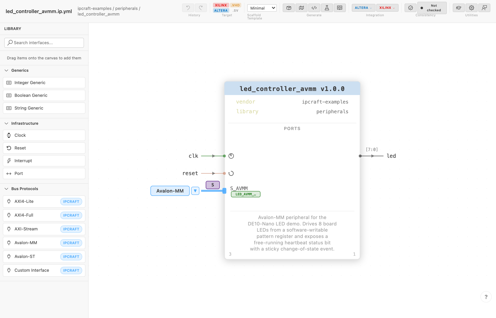
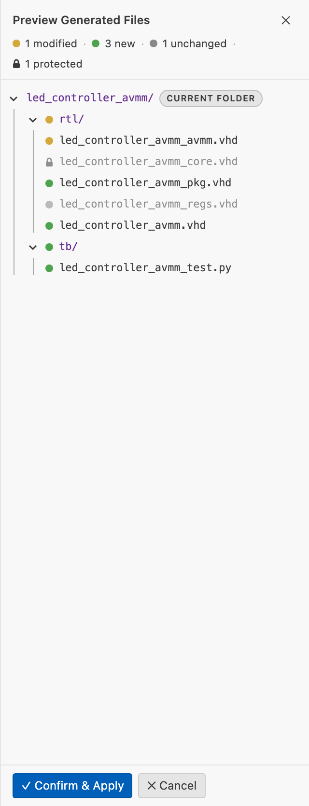

Creating Your First IP Core¶
How to go from an empty folder to a generated RTL project using the visual canvas editor.
Prerequisites¶
- IPCraft installed in VS Code
- An empty workspace folder (or any folder you want to add the IP core to)
Create the file¶
- Open the Command Palette (
Ctrl+Shift+P) - Run
IPCraft: New IP Core(useIPCraft: New IP Core + Register Mapinstead if your core needs memory-mapped registers — see Memory-Mapped Registers) - Choose a file name — this becomes the core's default
namein the spec
IPCraft creates <name>.ip.yml and opens it in the visual canvas editor. The file is the single source of truth for the core — its VLNV, clocks, resets, ports, bus interfaces, and code generation settings all live here as plain, version-controllable YAML:
vlnv:
vendor: user # from the ipcraft.import.vendor setting
library: my_library
name: my_core # taken from the file name you chose
version: 1.0.0
description: A new IP Core definition
VLNV means vendor, library, name, and version. Together they identify the
core across files and tools. Set ipcraft.import.vendor once if you want new
cores to use your organization by default.
You can switch to the raw YAML at any time with Ctrl+Shift+V.
The canvas¶

The canvas renders the core as a live block diagram. Every change made in the Library Palette or Inspector is reflected here instantly, and vice versa.
| Panel | Location | Purpose |
|---|---|---|
| Library Palette | Left | Draggable primitives: generics, infrastructure (clocks/resets/ports/interrupts), bus protocols |
| IP Block Canvas | Center | The SVG schematic — clocks/resets on the left edge, ports and bus interfaces on the right, generics along the bottom |
| Inspector | Right | Properties of whatever is currently selected on the canvas |
| Key | Action |
|---|---|
Delete |
Remove the selected element |
Ctrl+D / Cmd+D |
Duplicate the selected element |
Ctrl+Z / Ctrl+Y |
Undo / Redo |
Ctrl+0 / Cmd+0 |
Reset zoom to 100% |
Ctrl+Wheel |
Zoom in / out |
Plain wheel / middle-mouse drag / Space+drag |
Pan |
Ctrl+F / Cmd+F |
Open port search |
See the IP Core Editor Reference for the full component and validation model.
Add clocks, resets, and ports¶
Drag each element from the Library Palette's Infrastructure category onto the canvas — clocks and resets go on the left edge, ports on the right edge. Click any placed element to edit its fields in the Inspector.
| Element | Key fields |
|---|---|
| Clock | Name (e.g. clk, axi_clk); optional frequency hint used for timing-aware vendor packaging; associated reset |
| Reset | Polarity — activeLow (default, rst_n) or activeHigh (rst); associated clock |
| Port | Name, direction (in / out / inout), width (numeric or a generic reference) |
| Generic/Parameter | Integer, boolean, or string variant — exposes a VHDL generic / SystemVerilog parameter at integration time |
The canvas colors each clock domain differently, so with two clocks every port associated with clk_a appears in one color and clk_b ports in another — clock-domain crossings become visible at a glance.
Add a bus interface¶
A bus interface groups related signals (address, data, handshake) into one named connector. IPCraft knows the signal maps for common bus standards, so you describe what the interface is rather than wiring every signal by hand.
- Open the Library Palette — bus types are grouped under Protocols
- Find the bus type you need (e.g. AXI4-Lite Slave), or use the search box to filter
- Drag it onto the right edge of the canvas block
- Click the new bus interface, then edit its fields in the Inspector
| You want… | Use |
|---|---|
| Register access (control/status) | AXI4-Lite Slave or Avalon-MM Slave |
| Burst DMA from the core | AXI4 Master |
| Simple memory-mapped I/O | APB Slave |
| Custom/proprietary bus | Custom Interface (conduit) — see Custom interfaces |
The Inspector's physicalPrefix field sets the HDL signal prefix, e.g. s_axi_ → s_axi_awaddr, s_axi_awvalid.
Generate your RTL¶
Run IPCraft: Scaffold Project (RTL + EDA packaging + Testbench) from the Command Palette, the editor title bar, or the IPCraft menu. It generates RTL, a testbench, and vendor project files in one step — see Generating a Project for the full output layout and per-piece generation commands.
| Output | What it is |
|---|---|
<name>.vhd / .sv |
Top-level entity/module instantiating core + bus wrapper |
<name>_core.vhd / .sv |
User logic skeleton — this is where your code goes |
<name>_pkg.vhd / .sv |
Register constants and types package |
<name>_axil.vhd / <name>_avmm.vhd (+ .sv) |
Bus wrapper matching the bus type on your register-mapped slave interface |
<name>_regs.vhd / .sv |
Register decode logic (if a register map is linked) |
tb/<name>_test.py, tb/Makefile |
cocotb test skeleton and simulation Makefile |
component.xml / <name>_hw.tcl |
Vivado IP-XACT / Platform Designer component (per configured target) |
Review and accept the staged output¶
Before anything is written to disk, IPCraft shows a staging overlay with exactly what will happen:

| Status | Meaning |
|---|---|
| New | File does not exist yet — will be created |
| Modified | Existing file whose content differs — will be overwritten unless excluded |
| Unchanged | Generated content is identical to what's on disk — no write needed |
| Protected (lock icon) | User-owned file (managed: false) — excluded from Apply by default |
Click View Diff next to any modified file to open a side-by-side diff before committing. Click Confirm & Apply to write all staged, non-excluded files, or Cancel to discard the run.
A file is only protected from overwrite if something explicitly marks it managed: false — either a fileSets entry you add yourself, or a scaffold pack rule. The default builtin-ipcraft pack does not mark <name>_core.vhd as protected, so re-running Scaffold Project regenerates it from the template and any hand-edited logic there is overwritten unless you protect it explicitly.
Next steps¶
- Generating a Project — every generation command and the full output layout
- Building a Project — run a headless Vivado/Quartus build against the generated files
- Memory-Mapped Registers — link a register map to a bus interface
- Prefer to follow along inside VS Code? Run
IPCraft: Open Walkthrough...→ Design Your First IP Core